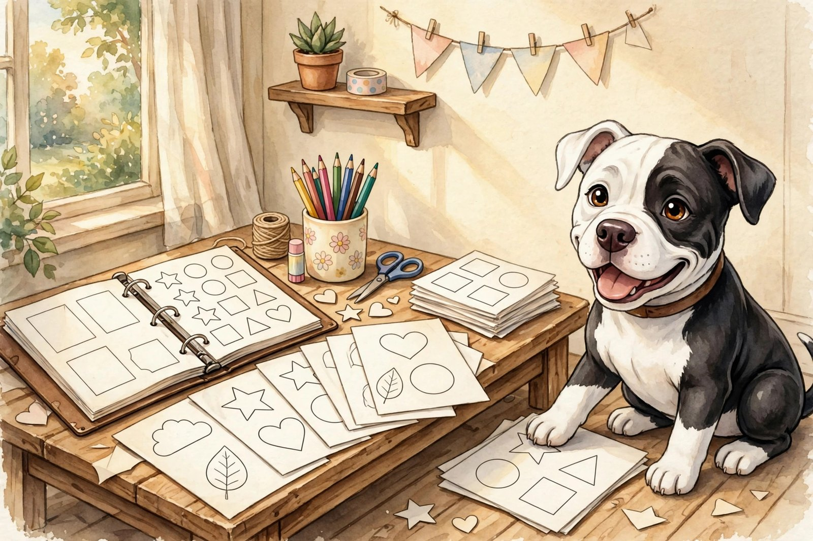

下載和列印

可以帶走的東西：塗色頁、工作表和小工具。如果哪樣東西需要郵箱或賬號，卡片上會寫清楚。
-
塗色頁包含《Axolotl Dreams》《Empowered by Dragons》和 Muffin 的塗色頁。每週更新一張。去看看塗色頁
-
手稿地圖手稿地圖：全套出版工具。數據保存在你的瀏覽器裡，記得用導出功能備份。
-
日記寫作提示工具不需要賬號。數據只保存在你的瀏覽器裡。
-
每日寫作工作表一頁六個日記寫作提示，可以列印。PDF
-
Sigil 每日計劃表一頁式日計劃表，附每日靈感小練習（Sigil 練習）。PDF
-
聖誕清單19 頁的節日計劃：預算、禮物、餐食、裝飾、賀卡和待客。PDF
-
備餐速查表五種主食、七頓 15 分鐘快手餐，一頁紙可以列印。PDF
-
殘障者就醫手冊18 頁的填寫式手冊，幫你整理自己的醫療記錄和維權筆記。這是整理工具，不是醫療建議。PDF
-
睡前煩惱清空頁一頁式的睡前清空：把心裡的煩惱寫在紙上，再安心睡覺。PDF
新的下載做好了，就會出現在這裡。
想找答案而不是下載？常見問題裡有關於小屋的樸實回答。